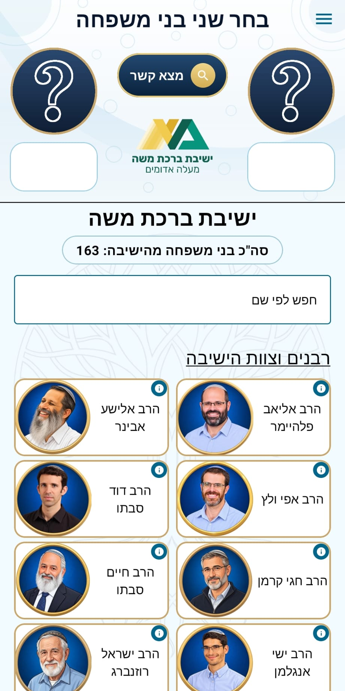
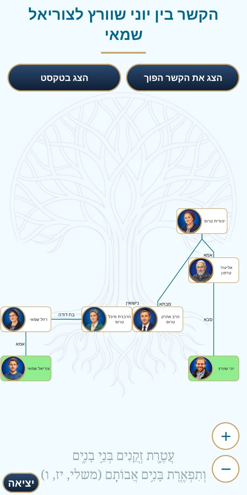
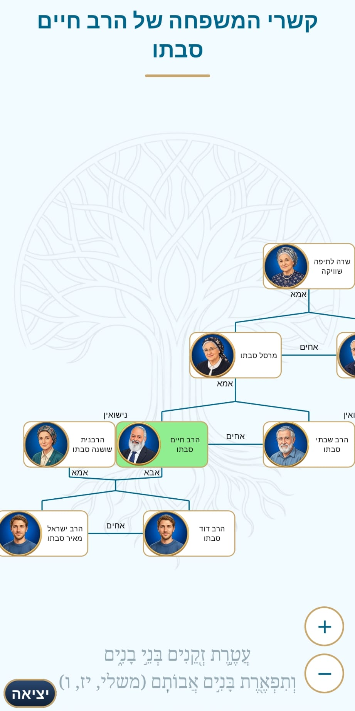
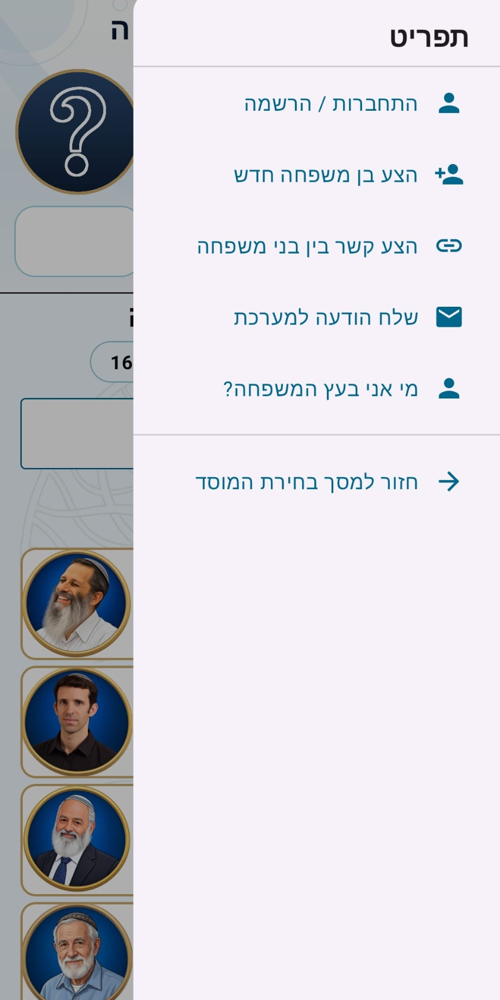

על האפליקציה
עץ משפחה ישיבתי היא אפליקציית אנדרואיד בעברית לקהילת הישיבה. היא מרכזת עץ משפחה משותף אחד, שבו כולם רואים את אותם בני המשפחה ואת הקשרים ביניהם, ומאפשרת לגלות בקלות איך שני אנשים בקהילה קשורים זה לזה.
מה אפשר לעשות
-
מצא קשר
בוחרים שני בני משפחה ומקבלים את מסלול הקשר הקצר ביותר ביניהם, כתרשים או כמשפט בעברית, ואפשר גם להפוך את כיוון הקשר.
-
עץ משפחה לכל אחד
תרשים של קשרי המשפחה של כל בן משפחה: הורים, אחים, בני זוג, ילדים ועוד.
-
חיפוש ודפדוף
חיפוש לפי שם, ורשימת בני המשפחה מקובצת לפי מחזורים, לצד רבני וצוות הישיבה.
-
מי אני בעץ המשפחה?
משתמשים רשומים יכולים לזהות את עצמם בעץ ולהגיש תמונה ליצירת דמות, באישור מנהל.
-
הצעת עדכונים
הצעת בני משפחה וקשרים חדשים ושליחת הודעות למנהלי המערכת, שבודקים ומאשרים כל שינוי.
-
התראות לפי בחירה
עדכונים על בני משפחה חדשים מהישיבה ועל מענה לבקשות – רק למי שבחר להפעיל אותם.
צילומי מסך




טכנולוגיות
- Kotlin
- Jetpack Compose
- Material 3
- Hilt
- Kotlin Coroutines
- Firebase Authentication
- Cloud Firestore
- Cloud Storage for Firebase
- Firebase Cloud Messaging
- Cloud Functions (Python)
- Coil